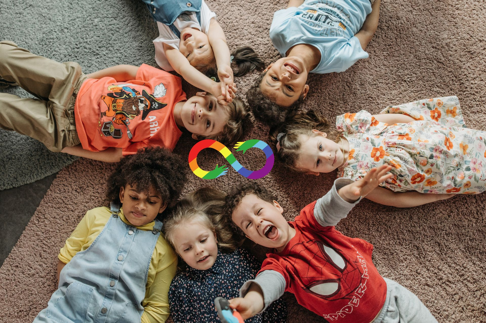

Método ABA
Equipe de Educação Especial – 2017
O que é ABA?
A Análise do Comportamento Aplicada (ABA) é uma área da Teoria Comportamental. Essa teoria dedica-se a observar, analisar e explicar a relação entre o ambiente, o comportamento humano e a aprendizagem. Entre os diversos conceitos importantes
na Teoria Comportamental podemos destacar o Condicionamento Operante, o Reforço, a Punição e a Extinção.
A Análise do Comportamento Aplicada produz conhecimento e tecnologias para a intervenção social com base nos pressupostos
da Teoria Comportamental. Esse procedimento pode ser utilizado em diversos contextos e em diferentes populações, como na intervenção de crianças com Transtornos do Espectro do Autismo. Ivar Lovaas foi o pioneiro na utilização da intervençãoABA
nessa população.
Tratamento ABA
O tratamento ABA envolve o ensino intensivo e individualizado das habilidades necessárias para que o indivíduo possa adquirir independência e a melhor qualidade de vida possível. Dentre as habilidades ensinadas incluem-se comportamentos sociais, tais como contato visual e comunicação funcional; comportamentos acadêmicos tais como pré-requisitos para leitura, escrita e matemática; além de atividades da vida diária como higiene pessoal. A redução de comportamentos tais como agressões, estereotipias, autolesões, agressões verbais, e fugas também fazem parte do tratamento comportamental, já que tais comportamentos interferem no desenvolvimento e integração do indivíduo diagnosticado com autismo.
Objetivos do tratamento
O objetivo do tratamento ABA é que, com o tempo, consequências naturais (intrínsecas) produzidas pelo próprio comportamento sejam suficientemente poderosas para manter a criança aprendendo.
Durante o ensino, cada comportamento apresentado
pela criança é registrado de forma precisa para que se possa avaliar seu progresso.
Características gerais de uma intervenção baseada na ABA
• Identificação de comportamentos e habilidades que precisam ser melhorados (por exemplo, comunicação com pais e professores, interação social com pares, etc.);
• métodos sistemáticos de selecionar e escrever objetivos;
• delinear uma intervenção envolvendo estratégias Comportamentais;
• coleta de dados antes, durante e depois da intervenção para analisar o progresso individual da criança e auxiliar na tomada de decisões em relação ao programa de intervenção e às estratégias que melhor promovem a aquisição
de habilidades especificamente necessárias para cada criança (BAER, WOLF; RISLEY, 1968, 1987; HUNDERT, 2009)
Reforçamento
Reforçamento positivo:
É um processo em que o acréscimo de uma consequência fortalece o comportamento, aumentando a probabilidade desse comportamento se repetir em contextos semelhantes. Por exemplo, se uma criança canta uma música e todos a aplaudem há altas chances dela repetiresse comportamento posteriormente; um bebê fala “ma- ma” e as pessoas ao redor sorriem e aplaudem, logo provavelmente ela repetirá esse balbucio outras vezes. Essas consequências reforçam o comportamento, uma vez que por serem “agradáveis” a pessoa se comportará novamente assim para conseguir produzir as mesmas consequências.
Reforçamento negativo:
O reforçamento negativo trata-se da retirada de um estímulo desagradável (aversivo) que resulta no fortalecimento de um comportamento. O reforçamento negativo inclui dois tipos de comportamentos que chamamos de fuga e esquiva. A fuga ocorre
quando interrompemos a ocorrência de um estímulo desagradável e a esquiva quando evitamos o contato com esse estímulo. Se esses comportamentos vierem a ocorrer mais frequentemente no futuro então dizemos que foram reforçados negativamente.
Por exemplo, retiramos a etiqueta (estimulo desagradável) de uma camisa nova que estamos vestindo porque está irritando a nuca (fuga). Toda vez que comprarmos uma camisa nova, iremos retirar a etiqueta antes de vestirmos a camisa para
que não incomode (esquiva).
Reforçadores Primários versus Secundários:
Desde o nascimento, alguns reforçadores já estão em funcionamento. Nós chamamos essa classe inicial de reforçadores de reforçadores primários, o que nos dá a ideia de que eles são os primeiros reforçadores a entrar em cena, e sua efetividade
não é dependente da relação deles com os outros reforçadores.
Entre os reforçadores primários positivos estão comida, água, estimulação produzida pelo sugar (na amamentação, por exemplo), estímulos gustativos, temperatura da pele,
sono e respirar.
Reforçadores secundários:
Pode ser:
- Tangíveis: bijuterias, brinquedos, livros, figurinhas, etc.:
- Comestíveis: doces, frutas, biscoitos, batata frita, guloseimas, etc. (brindes extras).:
- Sociais: um elogio, sorrisos, um aceno de cabeça, aplausos,
polegar-para-cima, uma piscadinha, etc.:
- Físicos: cócegas, abraços, beijos, tapinhas nas costas, um toque, um balanço, etc. Ler Mais
Sobre a Saber
A Saber Educacional iniciou suas atividades em abril de 2020, com o objetivo de oferecer atendimento clínico especializado a crianças, adolescentes e adultos
Nossas Redes Sociais